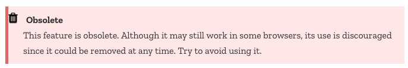
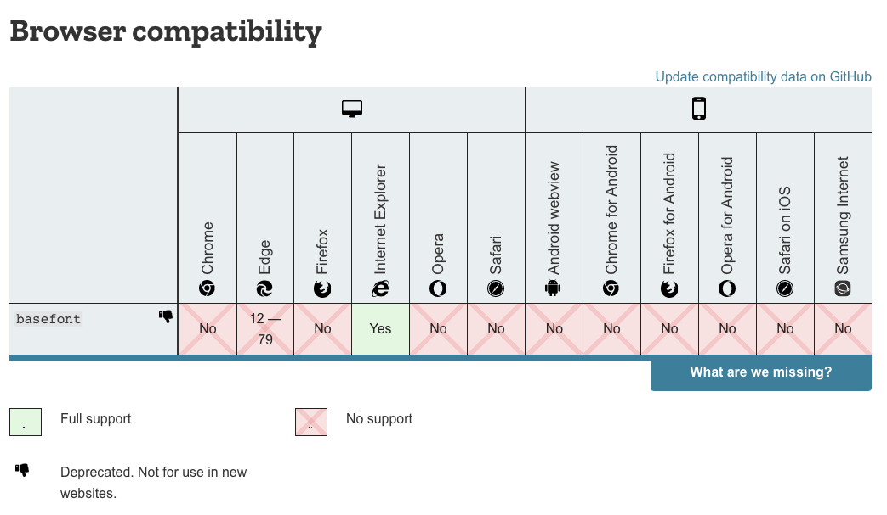

ETC5523: Communicating with Data
Introduction to web technologies
Lecturer: Michael Lydeamore
Department of Econometrics and Business Statistics
Aim
- Understand the make up of web documents, i.e. HTML, CSS and JS
- Write basic HTML and CSS with valid syntax
- Use CSS selectors to apply new styles
- Integrate CSS and JS to R markdown documents with HTML output
Why
- Basic web development skills are necessary for customising HTML documents
- This hard skill will be necessary later for when you are communicating with web documents and web apps
🌐 World Wide Web (WWW)
- WWW (or the Web) is the information system where documents (web pages) are identified by Uniform Resource Locators (URLs)
A web page consists of:
- HTML provides the basic structure of the web page
- CSS controls the look of the web page (optional)
- JS is a programming language that can modify the behaviour of elements of the web page (optional)
🔨 Web Documents are Handy
- HTML documents are really handy for including interactive elements and supported in almost all computer devices.
- Naturally, this ties in well with interactive data visualisation.
- Below is an interactive timeline visualisation of historical developments of HTML/CSS/JS:
So what exactly is
HTML, CSS, and JS?
Hyper Text Markup Language
- HTML files have the extension
.html. - HTML files are often rendered using a web browser via an URL.
- HTML files are just text files that follows a special syntax that alerts web browsers how to render it.
Simple HTML example
simple-example.html
HTML Structure
<html>
<!--This is a comment and ignored by web client.-->
<head>
<!--This section contains web page metadata.-->
<title>Communicating with Data</title>
<meta name="author" content="Emi Tanaka">
<link rel="stylesheet" href="css/styles.css">
</head>
<body>
<!--This section contains what you want to display on your web page.-->
<h1>I'm a first level header</h1>
<p>This is a paragraph.</p>
</body>
</html>HTML Syntax
Author content
The breakdown of this HTML syntax:
| start tag: | <span style=“color:blue;”>Author content</span> |
| end tag: | <span style=“color:blue;”>Author content</span> |
| content: | <span style=“color:blue;”>Author content</span> |
| element name: | <span style=“color:blue;”>Author content</span> |
| attribute: | <span style=“color:blue;”>Author content</span> |
| attribute name: | <span style=“color:blue;”>Author content</span> |
| attribute value: | <span style=“color:blue;”>Author content</span> |
Not all HTML tags have an end tag
Some HTML elements
| block element: | <div>content</div> |
| inline element: | <span>content</span> |
| paragraph: | <p>content</p> |
| header level 1: | <h1>content</h1> |
| header level 2: | <h2>content</h2> (note: only up to 6 levels) |
| italic: | <i>content</i> |
| emphasised text: | <em>content</em> |
| bold: | <b>content</b> |
| strong importance: | <strong>content</strong> |
| link: | <a href=“https://cwd.numbat.space/”>content</a> |
| insert new line: | <br> |
| unordered list: |
<ul> <li>item 1</li> <li>item 2</li> </ul> |
How these are rendered to the browser depends on the browser default style values, style attribute or CSS…
Cascading Style Sheet (CSS)
- CSS files have the extension
.cssand styles also XHTML, plain XML, SVG and XUL. - There are 3 ways to style elements in HTML:
- inline by using the
styleattribute inside HTML start tag:
- externally by using the
<link>element:
- internally by defining within
<style>element:
- inline by using the
CSS Syntax
The breakdown of the CSS syntax:
| selector: | h1 { color: blue; } |
| property: | h1 { color: blue; } |
| property name: | h1 { color: blue; } |
| property value: | h1 { color: blue; } |
You may have multiple properties for a single CSS selector
This is a header
Some CSS properties
<div> Sample text </div>
| background color: | div { background-color: yellow; } |
Sample text
|
| text color: | div { color: purple; } |
Sample text
|
| border: | div { border: 1px dashed brown; } |
Sample text
|
| left border only: | div { border-left: 10px solid pink; } |
Sample text
|
| text size: | div { font-size: 10pt; } |
Sample text
|
| padding: |
div { background-color: yellow; padding: 10px; } |
Sample text
|
| margin: |
div { background-color: yellow; margin: 10px; } |
Sample text
|
| horizontally center text: |
div { background-color: yellow; padding-top: 20px; text-align: center; } |
Sample text
|
| font family: | div { font-family: Marker Felt, times; } |
Sample text
|
| strike: | div { text-decoration: line-through; } |
Sample text
|
| underline: | div { text-decoration: underline; } |
Sample text
|
| opacity: | div { opacity: 0.3 } |
Sample text
|
CSS Selector
*
|
selects all elements | |
div
|
selects all <div> elements | |
div, p
|
selects all <div> and <p> elements | |
div p
|
selects all <p> within <div> | |
div > p
|
selects all <p> one level deep in <div> | |
div + p
|
selects all <p> immediately after a <div> | |
div ~ p
|
selects all <p> preceded by a <div> | |
.classname
|
selects all elements with the attribute class=“classname”. | |
.c1.c2
|
selects all elements with both c1 and c2 within its class attribute. | |
.c1 .c2
|
selects all elements with class c2 that is a descendant of an element with class c1. | |
#idname
|
selects all elements with the attribute id=“idname”. |
JavaScript (JS)
- JS is a programming language and enable interactive components in HTML documents.
- You can insert JS into a HTML document in two ways:
- internally by defining within
<script>element:
- externally by using the
srcattribute to refer to the external file:
- internally by defining within
- You are not expected to be able to do any JS in this course.
HTML outputs with
Rmd documents
Inserting CSS in Rmd documents Part 1
- There is a
cssengine:
- This inserts the following output into the document:
- If the output is a HTML document then the defined styles will apply to the output document.
Inserting CSS in Rmd documents Part 2
- If you have an external file, say
styles.css, that you define the styles, then most HTML outputs will support this with YAML argumentcss
or say
Inserting JS into Rmd documents Part 1
- There is a
jsengine:
which inserts:
Inserting JS into Rmd documents Part 2
If you need to insert at a specific location within the document then you can use includes:
---
output:
html_document:
includes:
in_header: ["header.html"]
before_body: ["before_body.html"]
after_body: ["after_body.html"]
---where header.html, before_body.html, after_body.html includes the JS code, e.g.
Community Web Enhancements
- Bootstrap is a free open-source CSS and JS that is widely adopted.1
- jQuery is a widely used JS library for object selection and manipulation.1
- MathJax is a JS library for displaying mathematics.1
- Font Awesome inserts icons to web using their CSS.2
- D3.js is one of the most popular JS library for interactive data visualisation.
☁️ Communication in the Web
- Hypertext Transfer Protocol (HTTP) functions as the communicator in the Web
- HTTPS is the secure version of HTTP where communications are encrypted

Warning
Different clients may work differently! E.g. Internet Explorer and Chrome may render the same web page differently.
📋 Web Standard
- There are 3 major groups that govern the standard for the Web:
- World Wide Web Consortium (W3C) formed in 1994 maintains the CSS specifications
- Web Hypertext Application Technology Working Group (WHATWG) formed in 2004 and is the publisher of the HTML and DOM standards
- TC39 technical committee of Ecma International, renamed from European Computer Manufacturers Association (ECMA) in 1994, maintains the standards for JS
- These groups consist of Mozilla, Apple, Google, Microsoft and other invited members.
📜 MDN Web Docs LIVE DEMO
https://developer.mozilla.org/
- Documentation of web standards maintained by the community.
- Includes status of use:
 - As well as its compatibility with web clients:

Writing HTML
You can play at https://htmltidy.net/

📝 Interactive Cheatsheets
HTML Cheatsheet https://htmlcheatsheet.com/
CSS Cheatsheet https://htmlcheatsheet.com/css/
JS Cheatsheet https://htmlcheatsheet.com/js/
🔎 Inspect Element LIVE DEMO
Below GIF shows interactive use of Inspect Element1 available from the menu in most web browsers when you right click on the web page2:

˜
Week 2 Lesson
Summary
- We went through the basics of HTML, CSS and JS
- You should be more comfortable with writing HTML and CSS
- You learnt how to include CSS and JS into HTML documents created from R Markdown
- You know the tools to interactively learn HTML and CSS

ETC5523 Week 2